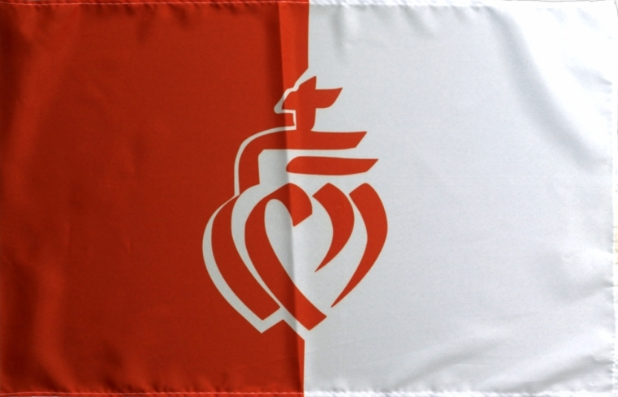

"Deux choses sont infinies: l'univers et la bêtise humaine. Mais en ce qui concerne l'Univers, je n'en ai pas encore acquis la certitude absolue.
Albert Einstein.
Pourquoi les surnoment-on les "ventres à choux"?
Vous avez surement déjà entendu parler des ventres à choux. Si ce n'est pas le cas sachez que certains de nos concitoyens utilisent cette expression pour désigner les Vendéens. Oui Mais pourquoi? A vrai dire on ne le sait plus vraiment, voici quatres des proposition les plus plausibles, à vous ensuite de fair votre choix:
Certains expliquent ce surnom par de prétendues anecdotes rapportées des guerres de Vendée. À cette époque, lorsque les Vendéens en embuscade apercevaient un groupe de soldats républicains, le cri de « Ventre à choux » faisait coucher les combattants dans les sillons de choux qui les dissimulaient jusqu’au moment de l’attaque.
D’autres assurent que les troupes républicaines ont été fort surprises en s’emparant des bébés vendéens pour les exterminer de constater qu’ils avaient sur le ventre une sorte de pansement constituée de feuilles de choux. Les feuilles de choux étaient utilisées par les mères pour la cicatrisation du nombril. Le chou est astringent.
On peut aussi y voir une expression de dédain ("l’identité du citadin nantais s’élabore entre autres en regard du « ventre-à-choux » vendéen, du campagnard") envers une population rurale ayant l’habitude de consommer le chou à une époque où ce végétal était destiné essentiellement aux bétails.
Une explication plus plausible est proposée par le site troospeanet.com, elle est la suivante : au début du XXe siècle, beaucoup de Vendéens du bocage émigrèrent vers la Charente. Les fermes de Charente manquaient en effet de main d’œuvre. Les Vendéens apportaient avec eux leur bétail et leurs modes de culture. Et parmi celles-ci, le fameux "chou fourrager", dont ils plantaient de grandes quantités pour leurs bovins. Les Charentais supputèrent que ce devait être là une de leurs principales sources d’alimentation… " des ventres à choux, ces gens-là."
Finalement tout cela n'est pas bien clair et l'on peut se demander si ce surnom ne subsiste pas seulement pour son côté humoristique. Gosciny et Uderzo auraient même pu écrire "ils sont fous ces ventres à brassicae" dans "Astérix chez les Vendéens"!